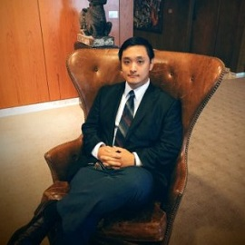

 Noah Parks
My name is Noah Park. I am a class 12 student at Year Up. I am working on obtaining my CompTIA A+ certification while also expanding my knowledge in other fields such as networking and cybersecurity.
On my spare time I like to play video games on my desktop. Video gaming is how I got into the tech industry and I continue to make it a part of my life. I am constantly learning more in order to improve myself both professionally and personally. I am passionate about technology in all aspects of the field. Everything from smartphones and tablets to desktop computers and drones gives me the drive to move forward with the knowledge that technology brings. The best thing about technology is that there is a never ending supply of things to learn about.
I feel like I have grown immensely since I first started Year Up. Year Up has taught me so many essential skills such as networking, troubleshooting, soft skills, and so on. I felt nervous and excited during my first few weeks of Learning & Development. My favorite subject so far has been coding and hardware. For my project in coding, I created a tutorial website on the PC video game called League of Legends. It was my first website and I am very proud of the results that I got based on the things I learned. In hardware, I learned the specifics of the help desk position. I learned how to manage tickets, interact with clients, and troubleshoot problems. The hands on approach has really helped me absorb all the information I needed quickly.
I will always strive to learn as much as I can in the world. Year Up has helped me with this by giving me a great opportunity to do so. Everything from the soft skills to survive the corporate world, to practical skills needed to move the company forward. I look forward to see what life has in store for me next even beyond Year Up! If you have any questions or need any help, feel free to connect with me on LinkedIn here.
https://www.linkedin.com/in/npark2012